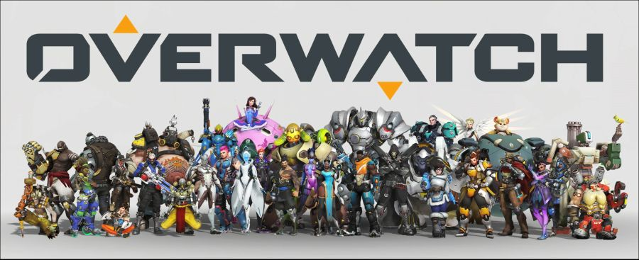

2019년 10월 15일에 닌텐도 스위치 버전이 출시되었다. 콘솔 버전 중 유일하게 한국어가 지원된다. 패키지 버전도 출시될 예정이나, 게임 카드는 빠지고 DL 코드만 동봉된다고 한다. 단 아마존 재팬 등에서 판매하는 일본판은 게임 카드가 존재한다. 용량은 기본 베이스인 12기가로, 추가 12기가 정도의 업데이트 용량을 받아야 실행 가능하다. 추가로 스위치 온라인 3개월 이용권도 함께 동봉된다. 가장 좋은 점으로 채팅을 못 해서 싸울 일이 없다고 한다
